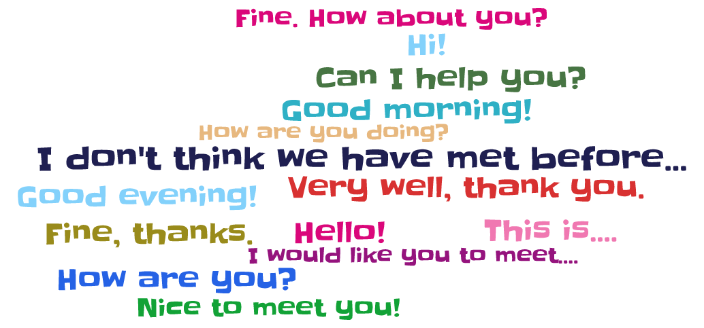

Activity 1 - Audio Recording

Peer Assessment Rubric
1) Words from Word Cloud or Story used:
Many
Some
Few
None
2) Were greetings such as "Hello", "Good Morning" used?
Correctly used
Used with a few mistakes
Used with many mistakes
Not used at all
3) Was complete information about name, class, etc. given?
All details were given
Most details were given
Some details were given
Very few details were given
4) The students stuck to the role they were playing
Always
Mostly
Sometimes
Rarely
5) The introductions were
Easy to understand
Mostly easy to understand
Difficult to understand
Very difficult to understand
6) The English used in the introductions was
Very Good
Good
Average
Poor